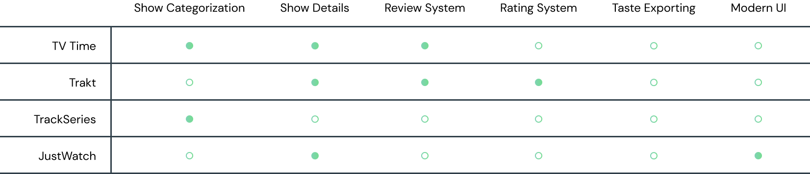
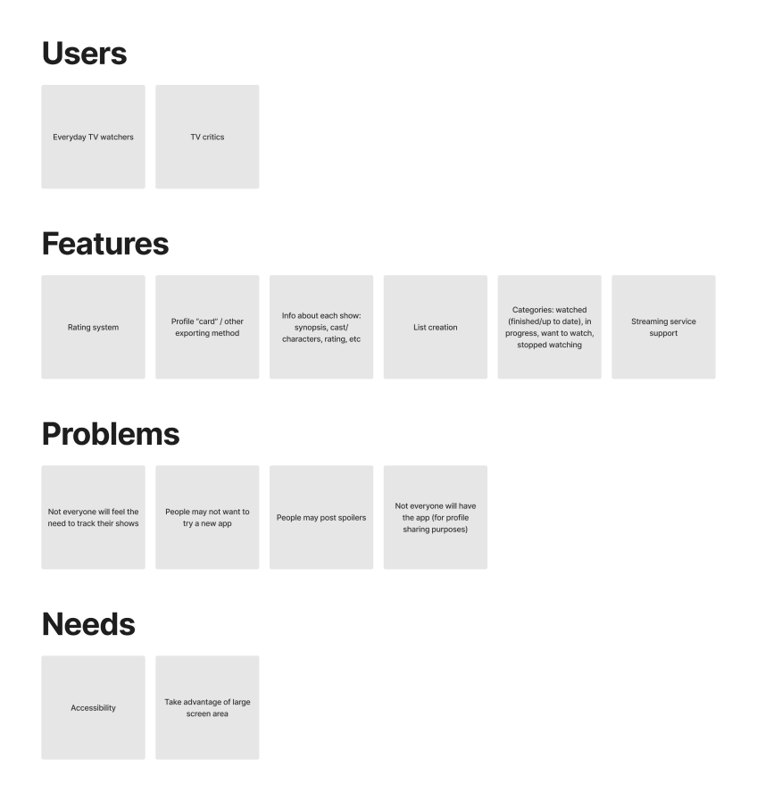
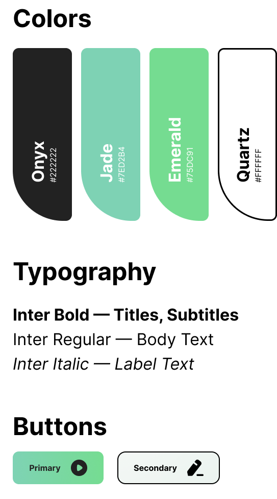

— Mark Renton, Trainspotting
Timeline
Aug 2022
Platform
Smart TV Application
Role
UI/UX Designer
Toolkit
Figma
Pilot is a smart TV application that helps users log which shows they’ve seen, track the ones they want to watch, and discover new potential favorites. In addition to these features, which collectively serve as a personal TV diary, Pilot also aims to create a sense of community by allowing users to share their tastes and see what their friends are currently binging.
While there exist a handful of popular websites to find and track TV shows, none have native smart TV support—a seemingly natural platform for such an application. In addition, many of these websites are outdated, lacking in features, or both. This leaves TV watchers of all kinds without a quick way to discover new shows they'll like, or keep tabs on everything they're still in the middle of.
I conducted an audit of 4 pre-existing TV tracking websites, taking note of what features they held in common to gauge the scope of Pilot. I also found a couple areas that most of these websites were lacking in, which provided ideas to implement in Pilot to give it a leg up on the competition.
Armed with my findings from scoping out Pilot’s competition, I compiled potential users, features, problems, and needs for Aria as a product. This allowed me to prioritize and organize my thoughts and ideas before moving forward with the design process.
Pilot was designed with the intention of creating a sleek, clean aesthetic that would be easy on the eyes when translated to a large-scale TV screen. Glassmorphism and the color green were used as recurring motifs to convey modernity with a splash of playfulness.
Working on Pilot continally proved to be an extremely enriching and educational experience. Throughout its creation, I learned the importance of always keeping up-to-date with design trends (in this case, glassmorphism), designing for non-standard devices (in this case, a TV) to cater to all users, and lending consistency and efficiency to designs using the nefarious Figma auto-layout (a topic I am still convinced would require a PhD and a graphic calculator to fully understand).
As someone who watches TV (shocker), Pilot also showed me how important it is to be passionate about your work. Although the user came first in my designing, creating something that I personally could see myself happily using ensured that I was designing to the best of my abilities.
Next Case Study: Aria